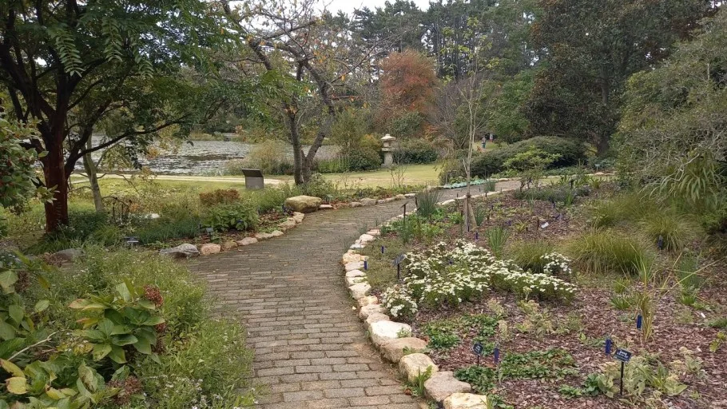
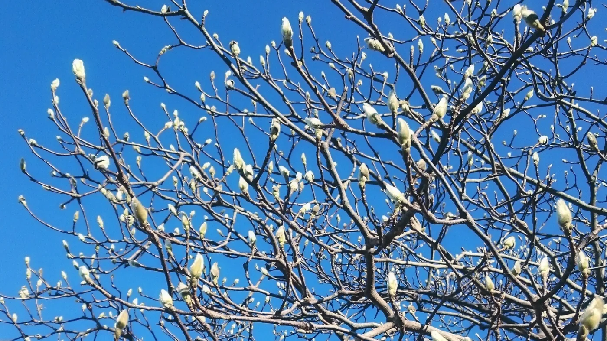
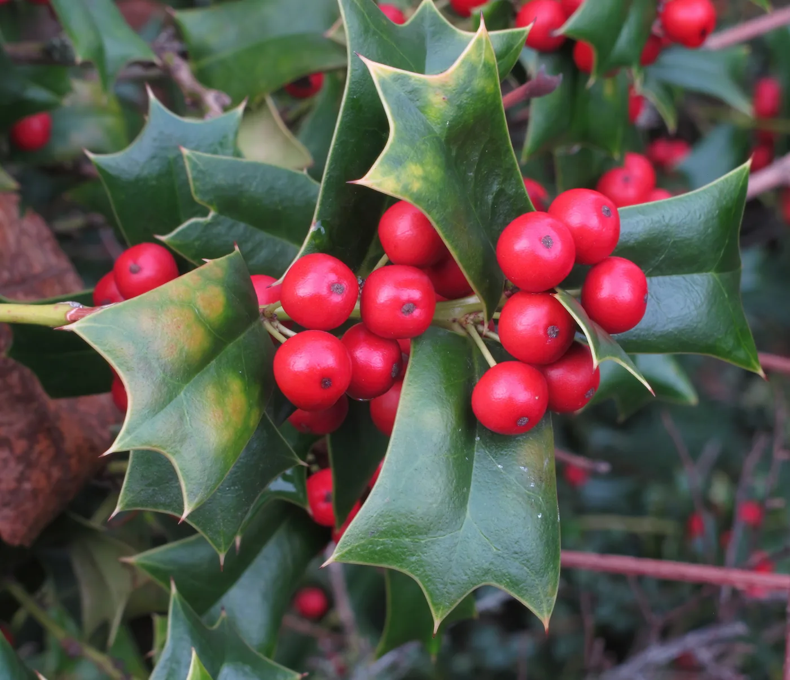
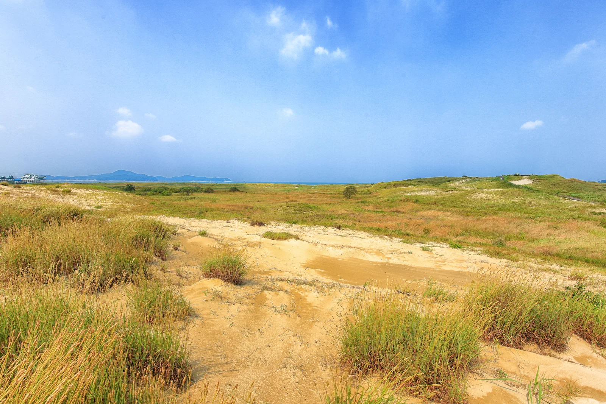
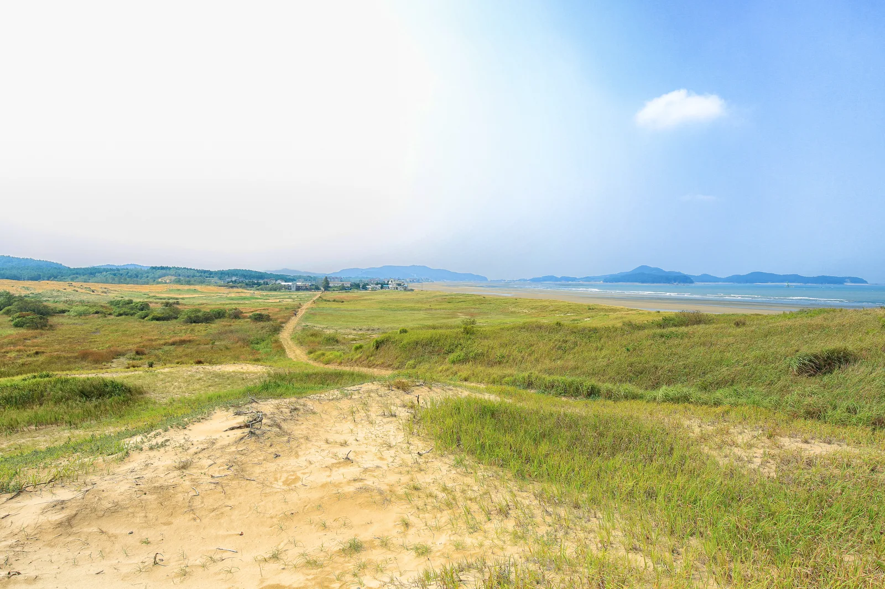
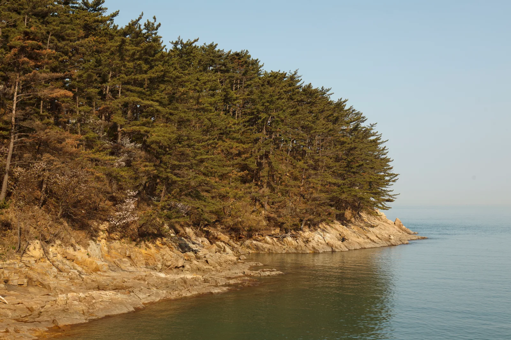

▲ 천리포수목원 밀러가든의 산책로. 연못과 정원 사이로 난 오솔길을 따라 국내외 희귀 수종이 이어진다 ⓒ Wikimedia Commons
충남 태안 소원면, 서해와 맞닿은 야산에 미국 펜실베이니아 출신 은행원이 평생을 갈아 넣은 정원이 있다. 1979년 한국에 귀화하며 '민병갈'이라는 이름을 얻은 칼 페리스 밀러(Carl Ferris Miller, 1921~2002)는 1962년부터 이 땅을 사들이기 시작해 40년간 사재를 쏟아부었다. 한복을 입고 한옥에 살며 붓글씨를 쓰던 그가 남긴 것이 국내 최초의 민간 수목원, 천리포수목원이다. 지금은 16,895분류군의 식물을 보유한 국내 최다 종 수목원으로 자리 잡았다. 목련·호랑가시나무 컬렉션부터 2026년 기준 입장료·관람시간, 주변 신두리 해안사구·만리포 드라이브 코스, 주차 정보까지 정리했다.
1. 설립자 민병갈 — '푸른 눈의 한국인'이 일군 정원
민병갈은 1945년 주한미군 정보장교로 처음 한국 땅을 밟았고, 이후 한국은행 고문으로 일하며 평생을 한국에서 보냈다. 태안 앞바다의 풍광에 반해 1962년부터 천리포 일대 야산을 사들이기 시작했고, 1970년 본격적으로 수목원 조성에 나섰다. 국내에 자생 식물이 거의 없던 황무지에 전 세계에서 수집한 종자를 심고, 사비로 부지를 넓혀 나갔다. 그가 평생 쏟은 돈은 수백억 원대로 추산된다. 약 59만㎡(17만 8천 평) 부지는 밀러가든·에코힐링센터·목련원·낭새섬·침엽수원·종합원·큰골 등 7개 구역으로 나뉘며, 연구 목적의 비공개 수목원으로 운영되다 2009년 밀러가든이, 2010년 목련원과 명상의 길이 차례로 일반에 개방됐다. 이런 성과를 인정받아 2000년에는 국제수목학회(IDS)로부터 세계에서 12번째, 아시아에서는 최초로 '세계의 아름다운 수목원' 인증을 받았다.
2026년 가을, 55년 만에 열리는 '비밀의 정원'
- 설립 초기 조성된 3만 4,000㎡ 규모의 침엽수원이 올가을 축제 기간 처음으로 한정 공개된다(11월 23일까지)
- 울릉솔송나무 등 국내 자생 침엽수와 해외 도입종을 모은 공간으로, 평소엔 연구 목적으로만 출입이 허용됐다
- 사전예약제 해설 프로그램으로만 입장 가능하며 평일 1팀, 주말·휴일 하루 2팀으로 인원이 제한된다
2. 세계 최다 목련 컬렉션 — 926분류군

▲ 개화를 앞둔 목련 꽃눈. 천리포수목원은 926분류군을 보유한 세계 최대 목련 컬렉션 수목원이다(사진은 참고용 목련속 자생종) ⓒ Wikimedia Commons
천리포수목원을 상징하는 것은 단연 목련이다. 전 세계 목련속(Magnolia) 식물 926분류군을 보유하고 있어 국제목련학회(Magnolia Society International)로부터 '세계에서 가장 완벽한 목련 컬렉션을 갖춘 수목원' 중 하나로 꼽힌다. 매년 3~4월이면 목련원 일대가 흰색·분홍색·자주색 꽃으로 뒤덮이며, 이 시기에는 평소 비공개인 정원 일부도 특별 개방된다. 목련 외에도 호랑가시나무 566분류군을 보유해 미국호랑가시학회(Holly Society of America)의 인증 수목원으로도 등록돼 있다. 이밖에 동백나무 1,096분류군, 무궁화 373분류군, 단풍나무 257분류군 등 주요 5속만으로도 3,000분류군이 넘어 사계절 내내 볼거리가 이어진다.

▲ 호랑가시나무(Ilex) 열매. 천리포수목원은 566분류군을 보유한 미국호랑가시학회 인증 수목원이다(사진은 참고용 호랑가시나무속 근연종) ⓒ Wikimedia Commons
천리포수목원 식물 컬렉션
- 보유 식물: 16,895분류군(2024년 12월 기준, 국내 수목원 중 최다)
- 목련속(Magnolia): 926분류군 — 세계 최대 규모 컬렉션
- 호랑가시나무속(Ilex): 566분류군 — 미국호랑가시학회 인증
- 동백나무속(Camellia) 1,096분류군, 무궁화속(Hibiscus) 373분류군, 단풍나무속(Acer) 257분류군도 보유
- 목련 만개 시기: 매년 3월 말~4월, 이 기간 비공개 정원 일부 특별 개방
- 2000년 국제수목학회(IDS) '세계의 아름다운 수목원' 인증(세계 12번째, 아시아 최초)
3. 2026년 입장료 — 성수기(4~5월)엔 최대 2,000원 인상
천리포수목원은 사립 수목원이라 계절에 따라 요금이 달라진다. 목련이 절정을 이루는 4~5월 성수기에는 일반요금이 2,000원, 우대요금이 1,000원 오른다.
| 구분 | 평시 요금 | 성수기(4~5월) | 대상 |
|---|---|---|---|
| 일반요금 | 13,000원 | 15,000원 | 만 20세~70세 미만 |
| 우대요금 | 10,000원 | 11,000원 | 중·고등학생, 만 70세 이상, 경증 장애인(4~6급), 국가유공자, 기초생활수급자, 태안주민(성인) |
| 특별우대 | 6,000원 | 만 36개월~초등학생 이하, 후원회원 동반 1인, 태안주민(그 외) | |
| 무료입장 | 무료 | 만 36개월 미만 유아, 소원면민(본인), 숙박이용객, 중증 장애인(1~3급) | |
할인·이용 팁
- 단체할인: 일반입장객 20인 이상 입장 시 1인당 1,000원 할인(중복할인 불가)
- 할인 적용 시 신분증·장애인복지카드·문화누리카드 등 증빙 지참 필수
- 가든스테이(수목원 내 숙박) 이용객은 입장료 무료 — 이용일 60일 전부터 공식 홈페이지 네이버 예약으로 신청 가능
- 태안 디지털관광주민증 제시 시 성인 일반요금 2,000원 추가 할인(별도 시행 여부는 방문 전 확인 권장)
4. 관람시간·주차 — 계절별 마감 시각이 다르다
관람시간은 겨울과 여름이 다르게 운영된다. 매표는 폐장 1시간 전에 마감되므로 해 지는 시간까지 여유 있게 도착하는 편이 좋다.
| 구분 | 기간 | 관람시간 | 입장마감 |
|---|---|---|---|
| 하절기 | 3월~10월 | 09:00~18:00 | 17:00 |
| 동절기 | 11월~2월 | 09:00~17:00 | 16:00 |
| 여름 연장운영 | 7월 셋째 주 토요일~8월 셋째 주 일요일 | 09:00~19:00 | 18:00 |
주차·이용 안내
- 연중무휴 운영. 다만 상시 개방 구역은 7개 중 밀러가든 한 곳뿐이며, 관람 소요시간은 공식 안내 기준 약 1시간 30분이다
- 수목원 전용 주차장 이용 — 공식 안내에 별도 요금 고지가 없어 무료 이용으로 파악되나, 성수기 만차 가능성을 감안해 오전 방문을 권장
- 주차 중 도난·훼손·접촉사고에 대해 수목원 측은 책임을 지지 않는다는 안내가 명시돼 있다
- 반려동물 동반입장 불가, 카메라 삼각대·돗자리·음식물(식수·음료 제외) 등 반입 제한
- 수목원 내 고성방가·종교활동·음주 및 채집·채취 금지(위반 시 산림보호법 위반으로 벌금 부과 대상)
- 주소: 충청남도 태안군 소원면 천리포1길 187
5. 신두리 해안사구 — 국내 최대 사구 지대

▲ 신두리 해안사구. 천연기념물로 지정된 국내 최대 규모의 해안사구 지대다 ⓒ Wikimedia Commons
천리포수목원에서 차로 15분 남짓 떨어진 신두리 해안사구는 국내 최대 규모의 해안 모래언덕 지대로, 천연기념물 제431호로 지정돼 있다. 소근~신두리~의항을 잇는 해안도로가 2007년 완공되면서 천리포·만리포·구름포 해수욕장과 함께 하나의 드라이브 코스로 묶이게 됐다. 탐방로는 난이도별로 세 갈래로 나뉜다. 신두리사구센터에서 모래언덕 포토존과 순비기언덕을 도는 A코스(1.2㎞)는 약 30분, B코스(2㎞)는 약 1시간, 곰솔 생태숲·억새골·고라니동산까지 아우르는 C코스(4㎞)는 약 2시간이 걸린다. 사구 지형은 계절과 바람에 따라 모양이 계속 바뀌기 때문에 방문할 때마다 다른 풍경을 볼 수 있다.

▲ 신두리 해안사구 탐방로. 가장 짧은 A코스(1.2㎞)가 약 30분, 가장 긴 C코스(4㎞)는 약 2시간 걸린다 ⓒ Wikimedia Commons
6. 만리포·천리포 — 해안도로 드라이브 코스

▲ 태안해안국립공원 만리포 일대. 소나무 숲과 암반 해안이 어우러진 구간이 해안도로를 따라 이어진다 ⓒ Wikimedia Commons
천리포수목원과 만리포해수욕장은 차로 10분 거리라 함께 묶기 좋다. 만리포는 1958년 반야월 작사·김교성 작곡, 박경원이 부른 가요 '만리포 사랑'으로 이름을 알린 이래 태안을 대표하는 해수욕장으로 꼽혀왔다. 해안도로를 따라 천리포~만리포~구름포로 이어지는 구간은 서해안 특유의 완만한 해안선과 소나무 숲이 어우러져 있어, 서울에서 출발할 경우 '태안읍 → 천리포수목원 → 만리포·꽃지해수욕장' 순으로 하루 코스를 짜는 경우가 많다.
▲ 만리포 해변의 일몰. 서해안 해안도로는 노을 감상 코스로도 인기가 높다 ⓒ Wikimedia Commons

▲ 태안 해변길. 해안도로에서 바로 내려설 수 있는 해변이 이어져 수목원과 묶어 돌기 좋다 ⓒ 태안군
7. 하루 코스 정리 — 수목원 + 해안 드라이브

▲ 노을이 번지는 태안 해안. 수목원 관람을 오전에 마치면 오후는 해안 드라이브로 채우기 좋다 ⓒ 이정운·채재혁·이원호 (공유마당, 기증저작물)
천리포수목원은 관람에 최소 1시간 30분~2시간이 걸리는 편이라, 오전에 수목원을 둘러보고 오후에 해안 드라이브로 이어가는 동선이 효율적이다. 서울에서 출발하면 약 2시간 30분이 걸린다.
| 시간대 | 장소 | 메모 |
|---|---|---|
| 오전 | 천리포수목원(밀러가든·목련원) | 매표 마감 1시간 전 도착, 관람 약 1.5~2시간 |
| 점심 | 소원면·천리포 인근 식당 | 수목원 인근에 해산물 위주 식당 다수 |
| 오후 | 신두리 해안사구 → 만리포해수욕장 | 사구 탐방로 30분(A코스)~2시간(C코스), 해안도로로 연결 |
| 저녁 | 만리포·구름포 노을 감상 | 서해 일몰 명소로 꼽히는 구간 |
8. 정리
체크포인트
- 천리포수목원은 민병갈(칼 페리스 밀러) 박사가 1962년부터 일군 국내 최초 민간 수목원이다.
- 목련 926분류군, 호랑가시나무 566분류군을 보유한 세계적 컬렉션 수목원이다.
- 2026년 입장료는 평시 일반 13,000원, 성수기(4~5월) 15,000원이다.
- 관람시간은 하절기(3~10월) 09:00~18:00, 동절기(11~2월) 09:00~17:00이며 매표는 1시간 전 마감된다.
- 차로 10~15분 거리에 신두리 해안사구·만리포해수욕장이 있어 오후 해안 드라이브로 묶기 좋다.